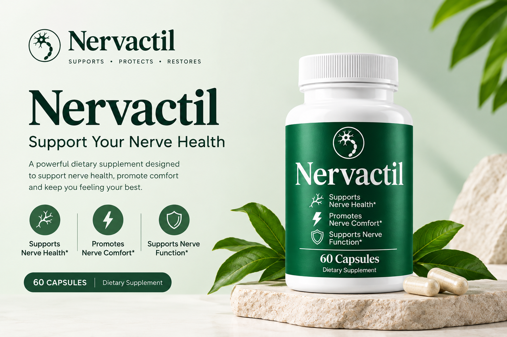

Nervactil Results: Expectations, Reviews, and What to Know
A review-style guide to setting realistic expectations, evaluating product information, and understanding why individual supplement experiences can vary.

What should you know about Nervactil results?
There is no responsible way to promise the same outcome for every person using a dietary supplement. Experiences can differ because of individual circumstances, diet, routine, expectations, other products or medicines, and many factors outside the supplement itself.
Product claims versus individual results
The wording on a product label or marketing page describes how a product is presented. It does not mean every user will experience the same result. A careful Nervactil review should keep these two ideas separate.
How to evaluate reviews
- Look for clear information about what product version was used.
- Separate personal anecdotes from verified product facts.
- Be cautious with guaranteed-result language.
- Do not treat a testimonial as clinical evidence.
- Check the current official label for ingredients and directions.
Why experiences may vary
People differ in routines, nutrition, sleep, activity, medications, sensitivities, and other circumstances. That is one reason a supplement review should describe possibilities and product information without predicting a specific personal outcome.
No fabricated testimonials or ratings
This website does not create customer names, star ratings, before-and-after stories, survey percentages, clinical statistics, or expert endorsements that were not supplied and verified. If you are comparing reviews elsewhere, consider whether the source clearly identifies how its claims were obtained.
Use the official product information as the baseline, follow the current directions, and remember that individual experiences with dietary supplements may vary.
FAQ
Does Nervactil guarantee results?
No. This website does not promise a specific outcome, and individual experiences may vary.
Are the testimonials on this page real?
There are no fabricated testimonials on this page. The content focuses on responsible review and expectation-setting.
Where can I find current product information?
Check the official product source and the current product label.
Review the official product information
If you want to learn more about the product itself, use the official source to check the latest details before purchasing.